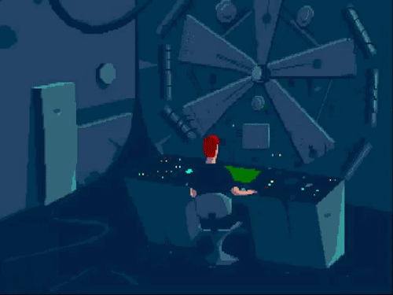

hunterchris
Lead Engineer (Cloud) — Berlin
Lead Engineer (Cloud) — Platforms dept. — Axel Springer National Media & Tech, Berlin.
Supporting cloud infrastructure across NMT business units: architecture design, deployment pipelines, cost governance, observability, and platform reliability. Helping bridge engineering strategy with day-to-day technical execution.
Strategy → Code
Bridge between NMT strategy and technical implementation.
Roadmaps
Supporting business units in drafting technical roadmaps.
Platform Changes
Driving platform-wide architectural changes for reliability.
Enablement
Mentoring engineers and building tools for their day-to-day.